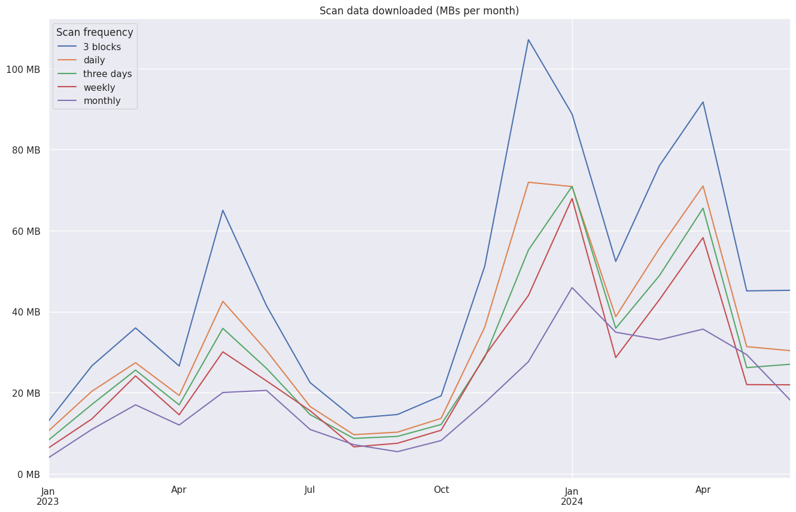

BIP 352
Introduction
Abstract
This document specifies a protocol for static payment addresses in Bitcoin without on-chain linkability of payments or a need for on-chain notifications.
Copyright
This BIP is licensed under the BSD 2-clause license.
Motivation
Using a new address for each Bitcoin transaction is a crucial aspect of maintaining privacy. This often requires a secure interaction between sender and receiver, so that the receiver can hand out a fresh address, a batch of fresh addresses, or a method for the sender to generate addresses on-demand, such as an xpub.
However, interaction is often infeasible and in many cases undesirable. To solve for this, various protocols have been proposed which use a static payment address and notifications sent via the blockchainWhy not use out-of-band notifications Out-of-band notifications (e.g. using something other than the Bitcoin blockchain) have been proposed as a way of addressing the privacy and cost concerns of using the Bitcoin blockchain as a messaging layer. This, however, simply moves the privacy and cost concerns somewhere else and increases the risk of losing money due to a notification not being reliably delivered, or even censored, and makes this notification data critical for backup to recover funds.. These protocols eliminate the need for interaction, but at the expense of increased costs for one-time payments and a noticeable footprint in the blockchain, potentially revealing metadata about the sender and receiver. Notification schemes also allow the receiver to link all payments from the same sender, compromising sender privacy.
This proposal aims to address the limitations of these current approaches by presenting a solution that eliminates the need for interaction, eliminates the need for notifications, and protects both sender and receiver privacy. These benefits come at the cost of requiring wallets to scan the blockchain in order to detect payments. This added requirement is generally feasible for full nodes but poses a challenge for light clients. While it is possible today to implement a privacy-preserving light client at the cost of increased bandwidth, light client support is considered an area of open research (see Appendix A: Light Client Support).
The design keeps collaborative transactions such as CoinJoins and inputs with MuSig and FROST keys in mind, but it is recommended that the keys of all inputs of a transaction belong to the same entity as there is no formal proof that the protocol is secure in a collaborative setting.
Goals
We aim to present a protocol which satisfies the following properties:
- No increase in the size or cost of transactions
- Resulting transactions blend in with other bitcoin transactions and can’t be distinguished
- Transactions can’t be linked to a silent payment address by an outside observer
- No sender-receiver interaction required
- No linking of multiple payments to the same sender
- Each silent payment goes to a unique address, avoiding accidental address reuse
- Supports payment labeling
- Uses existing seed phrase or descriptor methods for backup and recovery
- Separates scanning and spending responsibilities
- Compatible with other spending protocols, such as CoinJoin
- Light client/SPV wallet support
- Protocol is upgradeable
Overview
We first present an informal overview of the protocol. In what follows, uppercase letters represent public keys, lowercase letters represent private keys, || refers to byte concatenation, · refers to elliptic curve scalar multiplication, G represents the generator point for secp256k1, and n represents the curve order for secp256k1. Each section of the overview is incomplete on its own and is meant to build on the previous section in order to introduce and briefly explain each aspect of the protocol. For the full protocol specification, see Specification.
Simple case
Bob publishes a public key B as a silent payment address. Alice discovers Bob’s silent payment address, selects a UTXO with private key a, public key A and creates a destination output P for Bob in the following manner:
- Let P = B + hash(a·B)·G
- Encode P as a BIP341 taproot output
Since a·B == b·A (Elliptic-curve Diffie–Hellman), Bob scans with his private key b by collecting the input public keys for each transaction with at least one unspent taproot output and performing the ECDH calculation until P is found (i.e. calculating P = B + hash(b·A)·G and seeing that P is present in the transaction outputs).
Creating more than one output
In order to allow Alice to create more than one output for BobWhy allow for more than one output? Allowing Alice to break her payment to Bob into multiple amounts opens up a number of privacy improving techniques for Alice, making the transaction look like a CoinJoin or better hiding the change amount by splitting both the payment and change outputs into multiple amounts. It also allows for Alice and Carol to both have their own unique output paying Bob in the event they are in a collaborative transaction and both paying Bob’s silent payment address., we include an integer in the following manner:
- Let k = 0
- Let P0 = B + hash(a·B || k)·G
- For additional outputs:
- Increment k by one (k++)
- Let Pi = B + hash(a·B || k)·G
Bob detects this output the same as before by searching for P0 = B + hash(b·A || 0)·G. Once he detects the first output, he must:
- Check for P1 = B + hash(b·A || 1)·G
- If P1 is not found, stop
- If P1 is found, continue to check for P2 and so on until an additional output is not found
Since Bob will only perform these subsequent checks after a transaction with at least one output paying him is found, the increase to his overall scanning requirement is negligible. It should also be noted that the order in which these outputs appear in the transaction does not affect the outcome.
Preventing address reuse
If Alice were to use a different UTXO from the same public key A for a subsequent payment to Bob, she would end up deriving the same destinations Pi. To prevent this, Alice should include an input hash in the following manner:
- Let input_hash = hash(outpoint || A)Why include A in the input hash calculation? By committing to A in input hash, this ensures that the sender cannot maliciously choose a private key a′ in a subsequent transaction where a′ = input_hash·a / input_hash′, which would force address reuse in the protocol.
- Let P0 = B + hash(input_hash·a·B || 0)·G
Bob must calculate the same input_hash when scanning.
Using all inputs
In our simplified example we have been referring to Alice’s transactions as having only one input A, but in reality a Bitcoin transaction can have many inputs. Instead of requiring Alice to pick a particular input and requiring Bob to check each input separately, we can instead require Alice to perform the tweak with the sum of the input public keysWhat about inputs without public keys? Inputs without public keys can still be spent in the transaction but are simply ignored in the silent payments protocol.. This significantly reduces Bob’s scanning requirement, makes light client support more feasibleHow does using all inputs help light clients? If Alice uses a random input for the tweak, Bob necessarily has to have access to and check all transaction inputs, which requires performing an ECC multiplication per input. If instead Alice performs the tweak with the sum of the input public keys, Bob only needs the summed 33 byte public key per transaction and only does one ECC multiplication per transaction. Bob can then use BIP158 block filters to determine if any of the outputs exist in a block and thus avoids downloading transactions which don’t belong to him. It is still an open question as to how Bob can source the 33 bytes per transaction in a trustless manner, see Appendix A: Light Client Support for more details., and protects Alice’s privacy in collaborative transaction protocols such as CoinJoinWhy does using all inputs matter for CoinJoin? If Alice uses a random input to create the output for Bob, this necessarily reveals to Bob which input Alice has control of. If Alice is paying Bob as part of a CoinJoin, this would reveal which input belongs to her, degrading the anonymity set of the CoinJoin and giving Bob more information about Alice. If instead all inputs are used, Bob has no way of knowing which input(s) belong to Alice. This comes at the cost of increased complexity as the CoinJoin participants now need to coordinate to create the silent payment output and would need to use Blind Diffie–Hellman to prevent the other participants from learning who Alice is paying. Note it is currently not recommended to use this protocol for CoinJoins due to a lack of a formal security proof..
Alice performs the tweak with the sum of her input private keys in the following manner:
- Let a = a1 + a2 + … + an
- Let input_hash = hash(outpointL || (a·G)), where outpointL is the smallest outpoint lexicographicallyWhy use the lexicographically smallest outpoint for the hash? Recall that the purpose of including the input hash is so that the sender and receiver can both come up with a deterministic nonce that ensures that a unique address is generated each time, even when reusing the same scriptPubKey as an input. Choosing the smallest outpoint lexicographically satisfies this requirement, while also ensuring that the generated output is not dependent on the final ordering of inputs in the transaction. Using a single outpoint also works well with memory constrained devices (such as hardware signing devices) as it does not require the device to have the entire transaction in memory in order to generate the silent payment output.
- Let P0 = B + hash(input_hash·a·B || 0)·G
Spend and Scan Key
Since Bob needs his private key b to check for incoming payments, this requires b to be exposed to an online device. To minimize the risks involved, Bob can instead publish an address of the form (Bscan, Bspend). This allows Bob to keep bspend in offline cold storage and perform the scanning with the public key Bspend and private key bscan. Alice performs the tweak using both of Bob’s public keys in the following manner:
- Let P0 = Bspend + hash(input_hash·a·Bscan || 0)·G
Bob detects this payment by calculating P0 = Bspend + hash(input_hash·bscan·A || 0)·G with his online device and can spend from his cold storage signing device using (bspend + hash(input_hash·bscan·A || 0)) mod n as the private key.
Labels
For a single silent payment address of the form (Bscan, Bspend), Bob may wish to differentiate incoming payments. Naively, Bob could publish multiple silent payment addresses, but this would require him to scan for each one, which becomes prohibitively expensive. Instead, Bob can label his spend public key Bspend with an integer m in the following way:
- Let Bm = Bspend + hash(bscan || m)·G where m is an incrementable integer starting from 1
- Publish (Bscan, B1), (Bscan, B2) etc.
Alice performs the tweak as before using one of the published (Bscan, Bm) pairs. Bob detects the labeled payment in the following manner:
- Let P0 = Bspend + hash(input_hash·bscan·A || 0)·G
- Subtract P0 from each of the transaction outputs and check if the remainder matches any of the labels (hash(bscan || 1)·G, hash(bscan || 2)·G etc.) that the wallet has previously used
It is important to note that an outside observer can easily deduce that each published (Bscan, Bm) pair is owned by the same entity as each published address will have Bscan in common. As such, labels are not meant as a way for Bob to manage separate identities, but rather a way for Bob to determine the source of an incoming payment.
Labels for change
Bob can also use labels for managing his own change outputs. We reserve m = 0 for this use case. This gives Bob an alternative to using BIP32 for managing change, while still allowing him to know which of his unspent outputs were change when recovering his wallet from the master key. It is important that the wallet never hands out the label with m = 0 in order to ensure nobody else can create payments that are wrongly labeled as change.
While the use of labels is optional, every receiving silent payments wallet should at least scan for the change label when recovering from backup in order to ensure maximum cross-compatibility.
Specification
We use the following functions and conventions:
- outpoint (36 bytes): the
COutPointof an input (32-byte txid, least significant byte first || 4-byte vout, least significant byte first)Why are outpoints little-endian? Despite using big endian throughout the rest of the BIP, outpoints are sorted and hashed matching their transaction serialization, which is little-endian. This allows a wallet to parse a serialized transaction for use in silent payments without needing to re-order the bytes when computing the input hash. Note: despite outpoints being stored and serialized as little-endian, the transaction hash (txid) is always displayed as big-endian. - ser32(i): serializes a 32-bit unsigned integer i as a 4-byte sequence, most significant byte first.
- ser256(p): serializes the integer p as a 32-byte sequence, most significant byte first.
- serP(P): serializes the coordinate pair P = (x,y) as a byte sequence using SEC1’s compressed form: (0x02 or 0x03) || ser256(x), where the header byte depends on the parity of the omitted Y coordinate.
For everything not defined above, we use the notation from BIP340. This includes the hashtag(x) notation to refer to SHA256(SHA256(tag) || SHA256(tag) || x).
Versions
This document defines version 0 (sp1q). Version is communicated through the address in the same way as bech32 addresses (see BIP173. Future upgrades to silent payments will require a new version. As much as possible, future upgrades should support receiving from older wallets (e.g. a silent payments v0 wallet can send to both v0 and v1 addresses). Any changes that break compatibility with older silent payment versions should be a new BIP.
Future silent payments versions will use the following scheme:
|
0 |
1 |
2 |
3 |
4 |
5 |
6 |
7 |
Compatibility |
|
|---|---|---|---|---|---|---|---|---|---|
|
+0 |
q |
p |
z |
r |
y |
9 |
x |
8 |
backwards compatible |
|
+8 |
g |
f |
2 |
t |
v |
d |
w |
0 |
|
|
+16 |
s |
3 |
j |
n |
5 |
4 |
k |
h |
|
|
+24 |
c |
e |
6 |
m |
u |
a |
7 |
- |
v31 (l) is reserved for a backwards incompatible change, if needed. For silent payments v0:
- If the receiver’s silent payment address version is:
- v0: check that the data part is exactly 66-bytes. Otherwise, fail
- v1 through v30: read the first 66-bytes of the data part and discard the remaining bytes
- v31: fail
- Receiver addresses are always BIP341 taproot outputsWhy only taproot outputs? Providing too much optionality for the protocol makes it difficult to implement and can be at odds with the goal of providing the best privacy. Limiting to taproot outputs helps simplify the implementation significantly while also putting users in the best eventual anonymity set.
- The sender should sign with one of the sighash flags DEFAULT, ALL, SINGLE, NONE (ANYONECANPAY is unsafe). It is strongly recommended implementations use SIGHASH_ALL (SIGHASH_DEFAULT for taproot inputs) when possibleWhy is it unsafe to use SIGHASH_ANYONECANPAY? Since the output address for the receiver is derived from the sum of the Inputs For Shared Secret Derivation public keys, the inputs must not change once the sender has signed the transaction. If the inputs are allowed to change after the fact, the receiver will not be able to calculate the shared secret needed to find and spend the output. It is currently an open question on how a future version of silent payments could be made to work with new sighash flags such as SIGHASH_GROUP and SIGHASH_ANYPREVOUT.
- Inputs used to derive the shared secret are from the Inputs For Shared Secret Derivation list
Scanning silent payment eligible transactions
For silent payments v0 a transaction MUST be scanned if and only if all of the following are true:
- The transaction contains at least one BIP341 taproot output (note: spent transactions optionally can be skipped by only considering transactions with at least one unspent taproot output)
- The transaction has at least one input from the Inputs For Shared Secret Derivation list
- The transaction does not spend an output with SegWit version > 1Why skip transactions that spend SegWit version > 1? Skipping transactions that spend unknown output scripts allows us to have a clean upgrade path for silent payments by avoiding the need to scan the same transaction multiple times with different rule sets. If a new SegWit version is added in the future and silent payments v1 is released with support, we would want to avoid having to first scan the transaction with the silent payment v0 rules and then again with the silent payment v1 rules. Note: this restriction only applies to the inputs of a transaction.
Address encoding
A silent payment address is constructed in the following manner:
- Let Bscan, bscan = Receiver’s scan public key and corresponding private key
- Let Bspend, bspend = Receiver’s spend public key and corresponding private key
- Let Bm = Bspend +
hashBIP0352/Label(ser256(bscan)
|| ser32(m))·G, where
hashBIP0352/Label(ser256(bscan)
|| ser32(m))·G is an optional integer tweak for
labeling
- If no label is applied then Bm = Bspend
- The final address is a Bech32m
encoding of:
- The human-readable part “sp” for mainnet, “tsp” for testnets (e.g. signet, testnet)
- The data-part values:
- The character “q”, to represent a silent payment address of version 0
- The 66-byte concatenation of the receiver’s public keys, serP(Bscan) || serP(Bm)
Note: BIP173 imposes a 90 character limit for Bech32 segwit addresses and limits versions to 0 through 16, whereas a silent payment address requires at least 117 characters Why do silent payment addresses need at least 117 characters? A silent payment address is a bech32m encoding comprised of the following parts:
- HRP [2-3 characters]
- separator [1 character]
- version [1-2 characters]
- payload, 66 bytes concatenated pubkeys [ceil(66*8/5) = 106 characters]
- checksum [6 characters]
For a silent payments v0 address, this results in a 117-character address when using a 3-character HRP. Future versions of silent payment addresses may add to the payload, which is why a 1023-character limit is suggested. and allows versions up to 31. Additionally, since higher versions may add to the data field, it is recommended implementations use a limit of 1023 characters (see BIP173: Checksum design for more details).
Inputs For Shared Secret Derivation
While any UTXO with known output scripts can be used to fund the transaction, the sender and receiver MUST use inputs from the following list when deriving the shared secret:
- P2TR
- P2WPKH
- P2SH-P2WPKH
- P2PKH
Inputs with conditional branches or multiple public keys (e.g. CHECKMULTISIG) are excluded from shared secret derivation as this introduces malleability and would allow a sender to re-sign with a different set of public keys after the silent payment output has been derived. This is not a concern when the sender controls all of the inputs, but is an issue for CoinJoins and other collaborative protocols, where a malicious participant can participate in deriving the silent payment address with one set of keys and then re-broadcast the transaction with signatures for a different set of public keys. P2TR can have hidden conditional branches (script path), but we work around this by using only the output public key.
For all of the output types listed, only X-only and compressed public keys are permittedWhy only compressed public keys Uncompressed and hybrid public keys are less common than compressed keys and generally considered to be a bad idea due to their blockspace inefficiency. Additionally, BIP143 recommends restricting P2WPKH inputs to compressed keys as a default policy..
P2TR
Keypath spend
witness: <signature>
scriptSig: (empty)
scriptPubKey: 1 <32-byte-x-only-key>
(0x5120{32-byte-x-only-key})
The sender uses the private key corresponding to the taproot output key (i.e. the tweaked private key). This can be a single private key or an aggregate key (e.g. taproot outputs using MuSig or FROST)Are key aggregation techniques like FROST and MuSig supported? While we do not recommend it due to lack of a security proof (except if all participants are trusted or are the same entity), any taproot output able to do a key path theoretically is supported. Any offline key aggregation technique can be used, such as FROST or MuSig. This would require participants to perform the ECDH step collaboratively e.g. ECDH = a1·Bscan + a2·Bscan + … + at·Bscan and P = Bspend + hash(input_hash·ECDH || 0)·G. Additionally, it may be necessary for the participants to provide a DLEQ proof to ensure they are not acting maliciously.. The receiver obtains the public key from the scriptPubKey (i.e. the taproot output key).
Script path spend
witness: <optional witness items> <leaf script> <control block>
scriptSig: (empty)
scriptPubKey: 1 <32-byte-x-only-key>
(0x5120{32-byte-x-only-key})
Same as a keypath spend, the sender MUST use the private key corresponding to the taproot output key. If this key is not available, the output cannot be included as an input to the transaction. Same as a keypath spend, the receiver obtains the public key from the scriptPubKey (i.e. the taproot output key)Why not skip all taproot script path spends? This causes malleability issues for CoinJoins. If the silent payments protocol skipped taproot script path spends, this would allow an attacker to join a CoinJoin round, participate in deriving the silent payment address using the tweaked private key for a key path spend, and then broadcast their own version of the transaction using the script path spend. If the receiver were to only consider key path spends, they would skip the attacker’s script path spend input when deriving the shared secret and not be able to find the funds. Additionally, there may be scenarios where the sender can perform ECDH with the key path private key but spends the output using the script path..
The one exception is script path spends that use NUMS point H as their internal key (where H is constructed by taking the hash of the standard uncompressed encoding of the secp256k1 base point G as X coordinate, see BIP341: Constructing and spending Taproot outputs for more details), in which case the input will be skipped for the purposes of shared secret derivationWhy skip outputs with H as the internal taproot key? If use cases get popularized where the taproot key path cannot be used, these outputs can still be included without getting in the way of making a silent payment, provided they specifically use H as their internal taproot key.. The receiver determines whether or not to skip the input by checking in the control block if the taproot internal key is equal to H.
P2WPKH
witness: <signature> <33-byte-compressed-key>
scriptSig: (empty)
scriptPubKey: 0 <20-byte-key-hash>
(0x0014{20-byte-key-hash})
The sender performs the tweak using the private key for the output and the receiver obtains the public key as the last witness item.
P2SH-P2WPKH
witness: <signature> <33-byte-compressed-key>
scriptSig: <0 <20-byte-key-hash>>
(0x160014{20-byte-key-hash})
scriptPubKey: HASH160 <20-byte-script-hash> EQUAL
(0xA914{20-byte-script-hash}87)
The sender performs the tweak using the private key for the nested P2WPKH output and the receiver obtains the public key as the last witness item.
P2PKH
scriptSig: <signature> <33-byte-compressed-key>
scriptPubKey: OP_DUP HASH160 <20-byte-key-hash> OP_EQUALVERIFY OP_CHECKSIG
(0x76A914{20-byte-key-hash}88AC)
The receiver obtains the public key from the
scriptSig. The receiver MUST parse the scriptSig
for the public key, even if the scriptSig does not match
the template specified
(e.g. <dummy> OP_DROP <Signature> <Public Key>).
This is to address the third-party
malleability of P2PKH scriptSigs.
Sender
Selecting inputs
The sending wallet performs coin selection as usual with the following restrictions:
- At least one input MUST be from the Inputs For Shared Secret Derivation list
- Exclude inputs with SegWit version > 1 (see Scanning silent payment eligible transactions)
- For each taproot output spent the sending wallet MUST have access to the private key corresponding to the taproot output key, unless H is used as the internal public key
Creating outputs
After the inputs have been selected, the sender can create one or more outputs for one or more silent payment addresses in the following manner:
- Collect the private keys for each input from the Inputs For Shared Secret Derivation list
- For each private key ai corresponding to a BIP341 taproot output, check that the private key produces a point with an even Y coordinate and negate the private key if notWhy do taproot private keys need to be checked? Recall from BIP340 that each X-only public key has two corresponding private keys, d and n - d. To maintain parity between sender and receiver, it is necessary to use the private key corresponding to the even Y coordinate when performing the ECDH step since the receiver will assume the even Y coordinate when summing the taproot X-only public keys.
- Let a = a1 + a2 + … +
an, where each ai has been
negated if necessary
- If a = 0, fail
- Let input_hash =
hashBIP0352/Inputs(outpointL || A),
where outpointL is the smallest
outpoint lexicographically used in the transaction and
A = a·G
- If input_hash is not a valid scalar, i.e., if input_hash = 0 or input_hash is larger or equal to the secp256k1 group order, fail
- Group receiver silent payment addresses by Bscan (e.g. each group consists of one Bscan and one or more Bm)
- If any of the groups exceed the limit of Kmax (=2323) silent payment addresses, fail.Why is the size of groups (i.e. silent payment addresses sharing the same scan public key) limited by Kmax? An adversary could construct a block filled with a single transaction consisting of N=23255 outputs (that’s the theoretical maximum under current consensus rules, w.r.t. the block weight limit) that all target the same entity, consisting of one large group. Without a limit on the group size, scanning such a block with the algorithm described in this document would have a complexity of O(N2) for that entity, taking several minutes on modern systems. By capping the group size at Kmax, we reduce the inner loop iterations to Kmax, thereby decreasing the worst-case block scanning complexity to O(N·Kmax). This cuts down the scanning cost to the order of tens of seconds. The chosen value of Kmax = 2323 represents the maximum number of P2TR outputs that can fit into a 100kvB transaction, meaning a transaction that adheres to the current standardness rules is guaranteed to be within the limit. This ensures flexibility and also mitigates potential fingerprinting issues.
- For each group:
- Let ecdh_shared_secret = input_hash·a·Bscan
- Let k = 0
- For each Bm in the group:
- Let tk =
hashBIP0352/SharedSecret(serP(ecdh_shared_secret)
|| ser32(k))
- If tk is not a valid scalar, i.e., if tk = 0 or tk is larger or equal to the secp256k1 group order, fail
- Let Pmn = Bm + tk·G
- Encode Pmn as a BIP341 taproot output
- Optionally, repeat with k++ to create additional outputs for the current Bm
- If no additional outputs are required, continue to the next Bm with k++Why not re-use tk when paying different labels to the same receiver? If paying the same entity but to two separate labeled addresses in the same transaction without incrementing k, an outside observer could subtract the two output values and observe that this value is the same as the difference between two published silent payment addresses and learn who the recipient is.
- Let tk =
hashBIP0352/SharedSecret(serP(ecdh_shared_secret)
|| ser32(k))
- Optionally, if the sending wallet implements receiving silent payments, it can create change outputs by sending to its own silent payment address using label m = 0, following the steps above
All generated outputs MUST be present in the final transaction. If an output Pi with i < k is omitted, the receiver will not be able to find outputs Pj where i < j <= k.
Receiver
Key Derivation
Two keys are needed to create a silent payments address: the spend key and the scan key. To ensure compatibility, wallets MAY use BIP32 derivation with the following derivation paths for the spend and scan key. When using BIP32 derivation, wallet software MUST use hardened derivationWhy use BIP32 hardened derivation? Using BIP32 derivation allows users to add silent payments to an existing master seed. It also ensures that a user’s silent payment funds are recoverable in any BIP32/BIP43 compatible wallet. Using hardened derivation ensures that it is safe to export the scan private key without exposing the master key or spend private key. for both the spend and scan key.
A scan and spend key pair using BIP32 derivation are defined (taking inspiration from BIP44) in the following manner:
scan_private_key: m / purpose' / coin_type' / account' / 1' / 0
spend_private_key: m / purpose' / coin_type' / account' / 0' / 0
purpose is a constant set to 352
following the BIP43 recommendation. Refer to BIP43
and BIP44
for more details.
Scanning
If each of the checks in Scanning silent payment eligible transactions passes, the receiving wallet must:
- Let A = A1 + A2 + … +
An, where each Ai is the
public key of an input from the
Inputs
For Shared Secret Derivation list
- If A is the point at infinity, skip the transaction
- Let input_hash =
hashBIP0352/Inputs(outpointL || A),
where outpointL is the smallest
outpoint lexicographically used in the transaction
- If input_hash is not a valid scalar, i.e., if input_hash = 0 or input_hash is larger or equal to the secp256k1 group order, fail
- Let ecdh_shared_secret = input_hash·bscan·A
- Check for outputs:
- Let outputs_to_check be the taproot output keys from all taproot outputs in the transaction (spent and unspent).
- Starting with k = 0:
- If k == Kmax (=2323), stop scanning.
- Let tk =
hashBIP0352/SharedSecret(serP(ecdh_shared_secret)
|| ser32(k))
- If tk is not a valid scalar, i.e., if tk = 0 or tk is larger or equal to the secp256k1 group order, fail
- Compute Pk = Bspend + tk·G
- For each output in outputs_to_check:
- If Pk equals output:
- Add Pk to the wallet
- Remove output from outputs_to_check and rescan outputs_to_check with k++
- Else, check for labels (always check for the change label,
i.e. hashBIP0352/Label(ser256(bscan)
|| ser32(m)) where m = 0)Why
precompute labels? Precomputing the labels is not
strictly necessary: a wallet could track the max number of labels
it has used (call it M) and scan for labels by adding
hash(bscan || m)·G to P0
for each label m up to M and comparing to the
transaction outputs. This is more performant than precomputing the
labels and checking via subtraction in cases where the number of
eligible outputs exceeds the number of labels in use. In practice
this will mainly apply to users that choose never to use labels,
or users that use a single label for generating silent payment
change outputs. If using a large number of labels, the wallet
would need to add all possible labels to each output. This ends up
being n·M additions, where n is the number of
outputs in the transaction and M is the number of labels
in the wallet. By precomputing the labels, the wallet only needs
to compute hash(bscan || m)·G once when
creating the labeled address and can determine if a label was used
via a lookup, rather than adding each label to each output.:
- Compute label = output - Pk
- Check if label exists in the list of labels used by the wallet
- If a match is found:
- Add Pk + label to the wallet
- Remove output from outputs_to_check and rescan outputs_to_check with k++
- If a label is not found, negate output and check a second timeWhy negate the output? Unfortunately taproot outputs are X-only, meaning we don’t know what the correct Y coordinate is. This causes this specific calculation to fail 50% of the time, so we need to repeat it with the other Y coordinate by negating the output.
- If Pk equals output:
- If no matches are found, stopWARNING: The decision to continue scanning (increment k) must be based on whether a cryptographic match was found, not on whether the wallet considers the output spendable or relevant. A match that is later filtered by wallet policy (e.g. dust) must still trigger a rescan with k++; stopping early may cause subsequent outputs for the same sender to be missed.
Spending
Recall that a silent payment output is of the form Bspend + tk·G + hashBIP0352/Label(ser256(bscan) || ser32(m))·G, where hashBIP0352/Label(ser256(bscan) || ser32(m))·G is an optional label. To spend a silent payment output:
- Let d = (bspend + tk + hashBIP0352/Label(ser256(bscan) || ser32(m))) mod n, where hashBIP0352/Label(ser256(bscan) || ser32(m)) is the optional label
- Spend the BIP341 output with the private key d
Backup and Recovery
Since each silent payment output address is derived independently, regular backups are recommended. When recovering from a backup, the wallet will need to scan since the last backup to detect new payments.
If using a seed/seed phrase only style backup, the user can recover the wallet’s unspent outputs from the UTXO set (i.e. only scanning transactions with at least one unspent taproot output) and can recover the full wallet history by scanning the blockchain starting from the wallet birthday. If a wallet uses labels, this information SHOULD be included in the backup. If the user does not know whether labels were used, it is strongly recommended they always precompute and check a large number of labels (e.g. 100k labels) to use when re-scanning. This ensures that the wallet can recover all funds from only a seed/seed phrase backup. The change label should simply always be scanned for, even when no other labels were used. This ensures the use of a change label is not critical for backups and maximizes cross-compatibility.
Backward Compatibility
Silent payments introduces a new address format and protocol for sending and as such is not compatible with older wallet software or wallets which have not implemented the silent payments protocol.
Test Vectors
A collection of test vectors in JSON format is provided, along with a python reference implementation. It uses a vendored copy of the secp256k1lab library at version 1.0.0 (commit 44dc4bd893b8f03e621585e3bf255253e0e0fbfb).
Each test vector consists of a sending test case and corresponding receiving test case. This is to allow sending and receiving to be implemented separately. To ensure determinism while testing, sort the array of Bm by amount (see the reference implementation). Test cases use the following schema:
test_case
{
"comment": "Comment describing the behavior being tested",
"sending": [<array of sender test objects>],
"receiving": [<array of recipient test objects>],
}
sender
{
"given": {
"vin": [<array of vin objects with an added field for the private key. These objects are structured to match the `vin` output field from `getrawtransaction verbosity=2`>],
"recipients": [<array of recipient objects, consisting of the address and its contained scan/spend public keys each>
{
"address": <bech32m encoding representing a silent payment address>,
"scan_pub_key": <hex encoded scan public key>,
"spend_pub_key": <hex encoded spend public key>,
"count": <optional integer for specifying the same recipient repeatedly (1 by default)>
},
...
]
},
"expected": {
"outputs": [<array of strings, where each string is a hex encoding of 32-byte X-only public key; contains all possible output sets, test must match a subset of size `n_outputs`>],
"n_outputs": <integer for the exact number of expected outputs>,
},
}
recipient
{
"given": {
"vin": [<array of vin objects. These objects are structured to match the `vin` output field from `getrawtransaction verbosity=2`>],
"key_material": {
"scan_priv_key": <hex encoded scan private key>,
"spend_priv_key": <hex encoded spend private key>,
}
"labels": [<array of ints, representing labels the receiver has used>],
},
"expected": {
"addresses": [<array of bech32m strings, one for the silent payment address and each labeled address (if used)>],
"outputs": [<optional array of outputs with tweak and signature, tester must match this set (alternatively, "n_outputs" can be specified)>
{
"priv_key_tweak": <hex encoded private key tweak data>,
"pub_key": <hex encoded X-only public key>,
"signature": <hex encoded signature for the output (produced with spend_priv_key + priv_key_tweak)>
},
...
],
"n_outputs": <optional integer for the number of expected found outputs (alternative to "outputs")>
}
}
Wallets should include inputs not in the Inputs For Shared Secret Derivation list when testing to ensure that only inputs from the list are being used for shared secret derivation. Additionally, receiving wallets should include non-silent payment outputs for themselves in testing to ensure silent payments scanning does not interfere with regular outputs detection.
Functional tests
Below is a list of functional tests which should be included in sending and receiving implementations.
Sending
- Ensure taproot outputs are excluded during coin selection if the sender does not have access to the key path private key (unless using H as the taproot internal key)
- Ensure the silent payment address is re-derived if inputs are added or removed during RBF
Receiving
- Ensure the public key can be extracted from non-standard P2PKH scriptSigs
- Ensure taproot script path spends are included, using the taproot output key (unless H is used as the taproot internal key)
- Ensure the scanner can extract the public key from each of the input types supported (e.g. P2WPKH, P2SH-P2WPKH, etc.)
Appendix A: Light Client Support
This section proposes a few ideas for how light clients could support scanning for incoming silent payments (sending is fairly straightforward) in ways that preserve bandwidth and privacy. While this is out of scope for the current BIP, it is included to motivate further research into this topic. In this context, a light client refers to any bitcoin wallet client which does not process blocks and does not have a direct connection to a node which does process blocks (e.g. a full node). Based on this definition, clients that directly connect to a personal electrum server or a bitcoin node are not light clients.
This distinction makes the problem for light clients more clear: light clients need a way to source the necessary data for performing the tweaks and a way of determining if any of the generated outputs exist in a block.
Tweak Data
Recall that a silent payment eligible transaction follows certain conditions and should have at least one unspent taproot output. Full nodes (or any index server backed by a full node, such as electrum server) can build an index which collects all of the eligible public keys for a silent payments eligible transaction, sums them up, multiplies the sum by the input_hash, and serves them to clients. This would be 33 bytes per silent payment eligible transaction.
For a typical bitcoin block of ~3500 txs, lets assume every transaction is a silent payments eligible transaction. This means a client would need to request 33 bytes * 3500 of data per block (roughly 100 kB per block). If a client were to request data for every block, this would amount to ~450 MB per month, assuming 100% taproot usage and all non-dust outputs remain unspent for > 1 month. As of today, these numbers are closer to 7–12 kB per block (30–50 MB per month)Data for Appendix A These numbers are based on data from January 2023 until July 2024. See Silent payments light client data for the full analysis..
Transaction cut-through
It is unlikely a light client would need to scan every block and as such can take advantage of transaction cut-through, depending on how often they choose to scan for new blocks. Empirically, ~75% of transactions with at least one non-dust unspent taproot output will have spent all non-dust taproot UTXOs in 150 blocks or less. This means a client that only scans once per day could significantly cut down on the number of blocks and the number of transactions per block that they need to request by only asking for data on transactions that were created since their last scan and that still have at least one non-dust unspent taproot output as of the current block height. Based on taproot adoption as of July 2024, a light client scanning once every 3 days would use roughly 30 MB per month.

BIP158
Once a light client has the tweak data for a block, they can determine whether or not an output to them exists in the block using BIP158 block filters. Per BIP158, they would then request the entire block and add the transaction to their wallet, though it maybe be possible to only request the prevout txids and vouts for all transactions with at least one taproot output, along with the scriptPubKeys and amounts. This would allow the client to download the necessary data for constructing a spending transaction, without downloading the entire block. How this affects the security assumptions of BIP158 is an open question.
Out-of-band notifications
Assuming a secure messaging protocol exists, the sender can send an encrypted (using the scan public key of the silent payment address) notification to the receiver with the following information:
- The spend public key (communicates the label)
- The shared secret portion of the private key (i.e hash(ecdh_shared_secret || k))
- The outpoint and amount (so it’s immediately spendable)
It is important to note that these notifications are not required. At any point, the receiver can fall back to scanning for silent payment transactions if they don’t trust the notifications they are receiving, are being spammed with fake notifications, or if they are concerned that they are not receiving notifications.
A malicious notification could potentially cause the following issues:
- You did not actually receive money to the stated key
- This can be probabilistically resolved by matching the key against the BIP158 block filters and assuming it’s not a false positive, or fully resolved by downloading the block
- You received money but the outpoint or amount is incorrect, so
attempts to spend it will fail or cause you to overpay fees
- There doesn’t seem to be much motivation for malicious senders to ever do this, but light clients need to take into account that this can occur and should ideally check for it by downloading the block
- The private key is correct but it wasn’t actually derived
using the silent payment protocol, causing recovery from back-up
to fail (unsafe - no implementation should ever allow this)
- This can be detected by downloading the tweak data of the corresponding block and should be resolved by immediately spending the output
Wallet designers can choose which tradeoffs they find appropriate. For example, a wallet could check the block filter to at least probabilistically confirm the likely existence of the UTXO, thus efficiently cutting down on spam. The payment could then be marked as unconfirmed until a scan is performed and the existence of the UTXO in accordance to the silent payment specification is verified.
Changelog
To help implementers understand updates to this document, we
attach a version number that resembles semantic
versioning (MAJOR.MINOR.PATCH). The
MAJOR version is incremented if changes to the BIP
are introduced that are incompatible with prior versions. The
MINOR version is incremented whenever the inputs or
the output of an algorithm changes in a backward-compatible way or
new backward-compatible functionality is added. The
PATCH version is incremented for other changes that
are noteworthy (bug fixes, test vectors, important clarifications,
etc.).
- 1.1.1 (2026-04-16):
- Add test vector “Input keys intermediate sum is zero but final sum is non-zero”
- 1.1.0 (2026-03-02):
- Introduce per-group recipient limit Kmax to mitigate quadratic scanning behavior for adversarial transactions.
- 1.0.2 (2025-07-25):
- Clarify how to handle the improbable corner case where the output of SHA256 is equal to 0 or greater than or equal to the secp256k1 curve order.
- 1.0.1 (2024-06-22):
- Add steps to fail if private key sum is zero (for sender) or public key sum is point at infinity (for receiver), add corresponding test vectors.
- 1.0.0 (2024-05-08):
- Initial version, merged as BIP-352.
Acknowledgements
This document is the result of many discussions and contains contributions by a number of people. The authors wish to thank all those who provided valuable feedback and reviews, including the participants of the BIP47 Prague discussion, the Advancing Bitcoin silent payments Workshop, and coredev. The authors would like to also thank w0xlt for writing the initial implementation of silent payments.
Rationale and References
BIP: 353
Layer: Applications
Title: DNS Payment Instructions
Authors: Matt Corallo <bip353@bluematt.me>
Bastien Teinturier <bastien@acinq.fr>
Status: Complete
Type: Specification
Assigned: 2024-02-10
License: CC0-1.0
Discussion: 2024-02-13: https://groups.google.com/g/bitcoindev/c/uATaflkYglQ [bitcoin-dev] Mapping Human-Readable Names to Payment Instructions